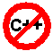

| 3. Expressions and Control Flow Statements | ||
|---|---|---|
 | Chapter 2. The Java Language |  |
| 3. Expressions and Control Flow Statements | ||
|---|---|---|
| | Chapter 2. The Java Language | |
Expressions are used to compute and assign values to variables and to help control the execution flow of a program. The job of an expression is two-fold: perform the computation indicated by the elements of the expression and return some value.
Definition:
An expression is a series of variables, operators, and method calls (constructed according to the syntax of the language) that evaluates to a single value. For example:
count++; System.in.read() != -1;
Statements that change the flow of execution of a program.
Table 2.7. Control Flow Statements
| Statement | Keyword |
|---|---|
| decision making | if-else, switch-case |
| loop | for, while, do-while |
| exception | try-catch-finally, throw |
| miscellaneous | break, continue, label:, return |
A while statement performs some action while a certain condition remains true.
while (expression)
statement;Example:
. . .
while (System.in.read() != -1) {
count++;
System.out.println("Read a character. Count = " + count);
}
. . .The if-else statement provides your programs with the ability to selectively execute other statements based on some criteria.
if (expression)
statement;Example:
. . .
if (response == OK) {
// code to perform OK action
} else {
// code to perform Cancel action
}The switch statement conditionally perform statements based on some expression.
Example:
. . .
switch (month) {
case 1: System.out.println("January"); break;
case 2: System.out.println("February"); break;
...
case 11: System.out.println("November"); break;
case 12: System.out.println("December"); break;
default: System.out.println("Hey, that's not a valid month!");
break;
}Use the for loop when you know the constraints of the loop (its initialization instruction, termination criteria, and increment instruction).
for (initialization; termination; increment)
statement;Example:
. . .
for (int i = 0; i < a.length; i++) {
// do something to the i th element of a
}The do-while loop is similar to the while loop except that the expression is evaluated at the bottom of the loop:
do {
statements
} while (booleanExpression);Example:
. . .
do {
c = in.read();
. . .
} while (c != -1);Continue and break statements are used to continue or break loops or switch statements. Used without labels, they have the same effects as in C.
To continue or break multiple-nested loop or switch statements, labels can be placed on loop and switch statements and used to break out or continue to the blocks named by them. For instance (from the String class):
test: for (int i = fromIndex; i+max1<=max2; i++) {
if (chartAt(i)==c0){
for (int k=1; k<max1; k++) {
if (chartAt(i+k) != str.chartAt(k)) {
continue test;
}
} /* end of inner for loop */
}
} /* end of outer for loop */![[Caution]](images/caution.png) | Caution |
|---|---|
 Labeled continues and breaks are an alternative to the goto statement which is not supported by Java. | |
Return exits from the current method and jump back to the statement within the calling method that follows the original method call.
Example:
return ++count;
The calling method can use the try, catch, and finally to catch and handle exceptions. It will be seen together with Exceptions.
| |  | |
| 2. Operators |  | 4. Arrays |
 Audio in Portuguese
Audio in Portuguese